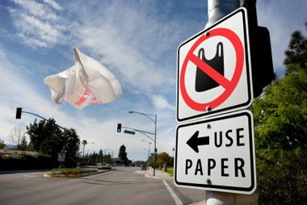

REFUSE

What is "REFUSE"??
Refuse is indicate that one is not willing to accept or grant (something offered or requested).
In our case to protect environment from human disaster, Refuse Campaign lunched to prevent plastic form going into ocean.
Refuse might be difficult to be done by our community because it become common thing after buy things.
To implement the refuse campaign,we have to educate and bring awarness about dangers of plastic poluttion towards better environment
A good example of banning plastic bags and straws, we just have to "NO" to them and advise people around us descrease uses of plastics.
Refuse! Bringing a reusable shopping bag is a great way to cut down on how much you end up with. A big part of living a zero waste lifestyle is refusing what you do not need.
What else can you refuse? Remove yourself from junk mail lists to cut down on paper.Start from ourselves then people around us will be following this habit.